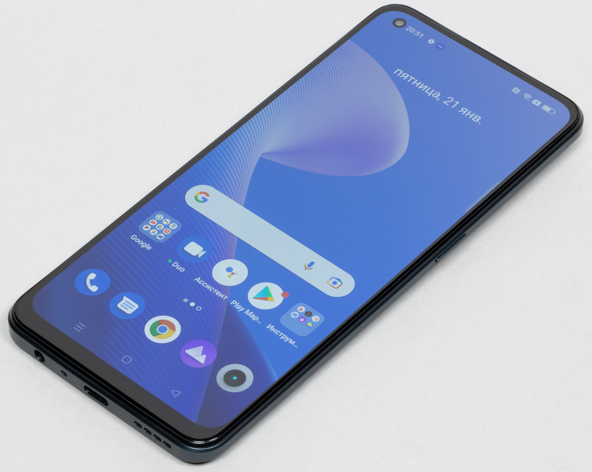
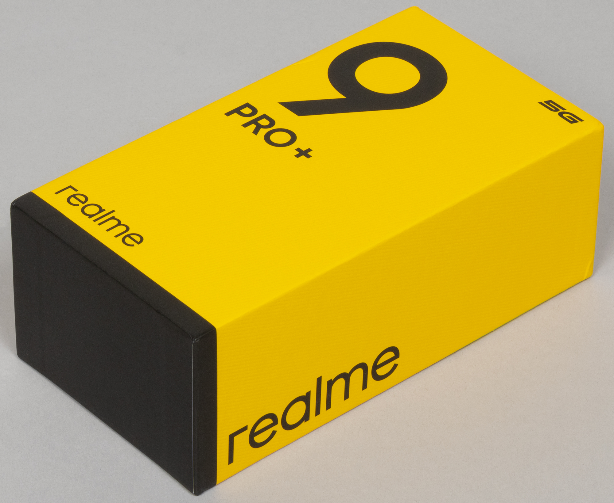
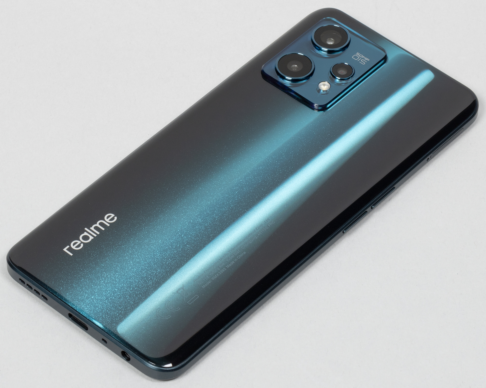
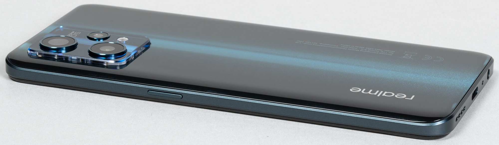
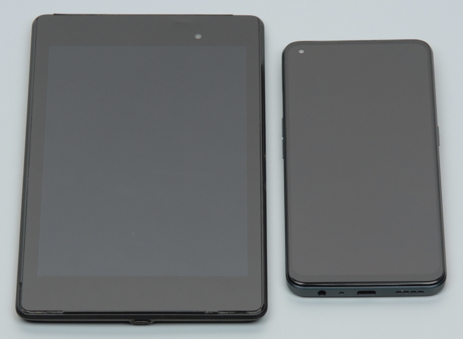
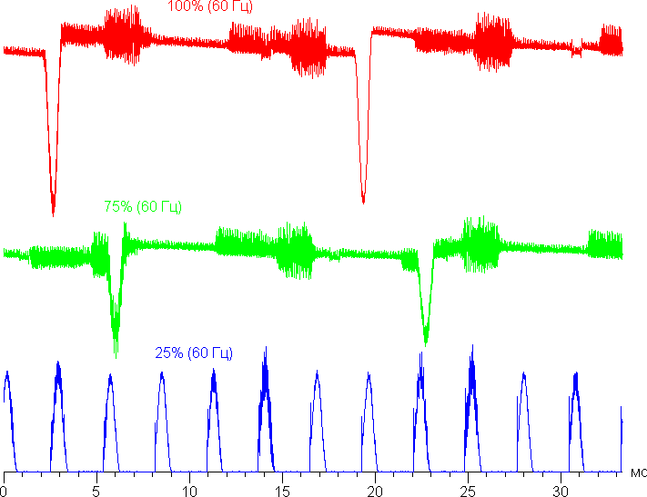
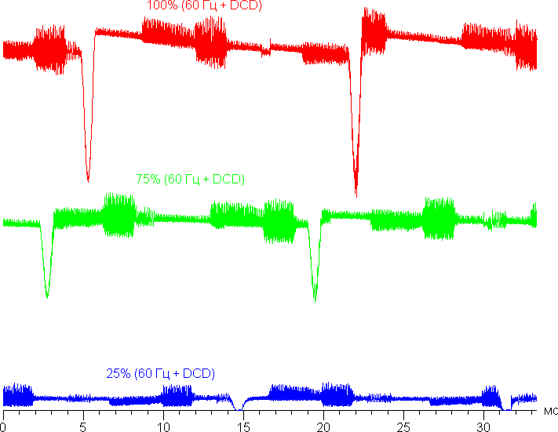

Компания Realme обновила в начале 2022 года свою основную линейку смартфонов, выпустив модели девятой серии Realme 9 Pro и Realme 9 Pro+. Не секрет, что в минувших сезонах производитель иногда экономил при производстве своих старших моделей: например, мог запросто использовать для дорогого смартфона не стеклянную, а пластиковую спинку корпуса. А уж про защиту от воды или поддержку беспроводной зарядки и говорить не приходится. Судя по всему, в новом сезоне вектор развития у Realme обновился: старший смартфон Realme 9 Pro+ получил настоящее стекло на спину, а также оптический стабилизатор основной камеры. Чем еще порадует в наступившем году китайский производитель в своем основном сегменте, вы узнаете из подробного обзора мобильной новинки Realme 9 Pro+.
Основные характеристики Realme 9 Pro+ (модель RMX3393)
- SoC MediaTek Dimensity 920 5G (2×Cortex-A78 @2,5 ГГц + 6×Cortex-A55 @2,0 ГГц)
- GPU Mali-G68 MC4
- Операционная система Android 12, Realme UI 3.0
- Сенсорный дисплей Super AMOLED, 6,4″, 1080×2400, 20:9, 409 ppi, 90 Гц
- Оперативная память 6/8 ГБ LPDDR4X, внутренняя память 128/256 ГБ UFS 2.2
- Поддержки microSD нет
- Поддержка Nano-SIM (2 шт.)
- Сети 2G GSM, 3G WCDMA, 4G, 5G
- GPS/A-GPS, Глонасс, Galileo, BDS
- Wi-Fi 6 (802.11a/b/g/n/ac/ax, 2,4/5 ГГц)
- Bluetooth 5.2, A2DP, LE
- NFC
- USB Type-C, USB OTG
- 3,5-миллиметровый аудиовыход на наушники
- Камеры 50 Мп + 8 Мп (широкоугольная) + 2 Мп, видео 4K@30 fps
- Фронтальная камера 16 Мп
- Датчики приближения и освещения, магнитного поля, акселерометр, гироскоп
- Сканер отпечатков пальцев под экраном (оптический)
- Аккумулятор 4500 мА·ч, быстрая зарядка 60 Вт
- Размеры 160×73×8 мм
- Масса 182 г
Внешний вид и удобство использования
Смартфон Realme 9 Pro+ поставляется в твердой упаковке, стандартно выдержанной в фирменных желто-серых цветах, но оформленной более свежо и современно.
Комплект включает гибкий прозрачный чехол, соединительный кабель и мощное зарядное устройство на 65 Вт (10 В, 6,5 А).
Смартфон Realme 9 Pro+ получил в целом узнаваемый дизайн бренда: все та же пухлая форма с сильно закругленными углами и покатой спинкой, но при этом плоское переднее стекло. «Дутость» корпуса визуально достигается за счет блестящего переливающегося в лучах света покрытия, которое придает задней спинке вид еще большей выпуклости, чем есть на самом деле.
Неизменен производитель и в размещении кнопок на обеих боковых гранях. Это неудобно — пальцы упираются в противоположные кнопки, выполняют непреднамеренные нажатия, приходится приучать себя к особому хвату. Однако никаких подвижек со стороны Realme в этом вопросе нет до сих пор.
Зато боковая рамка, выполненная, судя по всему, из металла, радует своей незауженной шириной и плоской поверхностью. За эти широкие матовые боковины смартфон крепко удерживается в ладони, совершенно не проскальзывает в пальцах, даже несмотря на скользкую гладкую спинку.
Спинка, судя по всему, получила качественное олеофобное покрытие, поскольку отпечатки пальцев на ней остаются с большим трудом и очень легко при этом стираются. В целом аппарат выглядит симпатично и современно за счет актуального варианта оформления камер с помощью полупрозрачной рамки, объединяющей все объективы и вспышку.
Камеры очень сильно выпирают, на столе аппарат раскачивается словно пресс-папье, с экраном работать таким образом невозможно.
Комплектный чехол не решает эту проблему, в нем аппарат тоже покачивается на столе. Чехол толстый и надежный, но, конечно, увеличивает и без того немаленькие габариты устройства.
Фронтальная камера установлена за круглым вырезом в самом углу матрицы экрана, где ей самое место. Светодиодного индикатора событий нет.
Сканер отпечатков пальцев вмонтирован под стеклом экрана. Датчик оптический, срабатывает он не так быстро, как классический емкостный. Палец придется немного придерживать на стекле, такова современная реальность. Зато он умеет считать удары сердца, демонстрируя на экране пульс пользователя.
В разъем на боку устанавливаются лишь две карты Nano-SIM, место для карты памяти microSD не предусмотрено. Поддерживается горячая замена карточек.
Верхний торец практически пуст за исключением отверстия дополнительного микрофона, а на нижнем торце размещены динамик, микрофон и разъем USB Type-C. К счастью, 3,5-миллиметровый аудиовыход для наушников тоже присутствует.
Корпус опять не получил сертифицированной полноценной защиты от пыли и влаги. В плане цветового оформления можно будет выбрать между зеленым, черным, а также особым синим цветом. У синего варианта имеется некое «фотохромное» покрытие, способное менять окрас на красный в определенном световом спектре. Вживую мы пока этого эффекта не наблюдали, руководствуемся официальным описанием.
Экран
Смартфон Realme 9 Pro+ оснащен Super AMOLED-дисплеем с диагональю 6,43 дюйма и разрешением 1080×2400, прикрытым плоским стеклом без загнутых краев. Физические размеры экрана составляют 67×149 мм, соотношение сторон — 20:9, плотность точек — 409 ppi. Ширина рамки вокруг экрана составляет по 3 мм с боков, 4 мм сверху и 8 мм снизу. По современным меркам рамка довольно широкая, особенно в части «подбородка». Для экрана поддерживается частота обновления 90 Гц, в том числе с автовыбором.
Лицевая поверхность экрана выполнена в виде стеклянной пластины с зеркально-гладкой поверхностью, устойчивой к появлению царапин. Судя по отражению объектов, антибликовые свойства экрана не хуже, чем у экрана Google Nexus 7 (2013) (далее просто Nexus 7). Для наглядности приведем фотографию, на которой в выключенных экранах отражается белая поверхность (слева — Nexus 7, справа — Realme 9 Pro+, далее их можно различать по размеру):
Экран у Realme 9 Pro+ чуть-чуть темнее (яркость по фотографии 97 против 98 у Nexus 7) и не имеет выраженного оттенка. Двоение отраженных объектов в экране Realme 9 Pro+ очень слабое, это свидетельствует о том, что между слоями экрана нет воздушного промежутка. За счет меньшего числа границ (типа стекло/воздух) с сильно различающимися коэффициентами преломления такие экраны лучше смотрятся в условиях интенсивной внешней засветки, но вот их ремонт в случае потрескавшегося внешнего стекла обходится гораздо дороже, так как менять приходится экран целиком. На внешней поверхности экрана есть специальное олеофобное (жироотталкивающее) покрытие (по эффективности гораздо лучше, чем у Nexus 7), поэтому следы от пальцев удаляются легче, а появляются с меньшей скоростью, чем в случае обычного стекла.
При ручном управлении яркостью и при выводе белого поля во весь экран максимальное значение яркости составило около 410 кд/м², а на очень ярком свету и в случае автоматической регулировки оно повышается до 520 кд/м². Также нужно учитывать, что в данном случае чем меньше площадь белого на экране, тем он светлее, то есть фактическая максимальная яркость белых участков будет почти всегда выше указанных значений. В итоге, учитывая хорошие антибликовые свойства, читаемость днем на солнце, должна быть на приемлемом уровне. Минимальное значение яркости — 1,9 кд/м², поэтому в полной темноте яркость можно понизить до комфортного значения. В наличии автоматическая регулировка яркости по датчику освещенности (он находится на фронтальной панели близко к ее верхнему краю правее решетки фронтального громкоговорителя). В автоматическом режиме при изменении внешних условий освещенности яркость экрана как повышается, так и понижается. Работа этой функции зависит от положения ползунка регулировки яркости: им пользователь может попытаться выставить желаемый уровень яркости в текущих условиях. Если не вмешиваться, то в полной темноте функция автояркости уменьшает яркость до 10 кд/м² (сойдет), в условиях освещенного искусственным светом офиса (примерно 550 лк) устанавливает на 130 кд/м² (нормально), а условно под прямыми лучами солнца повышает до 520 кд/м² (до максимума). Результат по умолчанию нас удовлетворил, но для эксперимента мы попробовали понизить яркость в полной темноте — яркость в таких условиях стала ниже, но после цикла повышения внешней освещенности и снижения значения яркости подсветки вернулись к изначальным. Получается, что функция автоподстройки яркости работает адекватно, но не позволяет пользователю настраивать свою работу под индивидуальные требования.
На любом уровне яркости присутствует значимая модуляция с частотой 60, 90 или 360 Гц. На рисунке ниже приведены зависимости яркости (вертикальная ось) от времени (горизонтальная ось) для нескольких значений настройки яркости. Сначала для режима с частотой обновления 60 Гц:
Видно, что на высокой и средней яркости амплитуда модуляции не очень большая (точнее скважность явно низкая), в итоге видимого мерцания нет. Однако при сильном понижении яркости появляется модуляция с большой относительной амплитудой и высокой скважностью, ее наличие уже можно увидеть в тесте на присутствие стробоскопического эффекта или просто при быстром движении глаз. В зависимости от индивидуальной чувствительности такое мерцание может вызывать повышенную утомляемость. Впрочем, фаза модуляции различается по площади экрана, а частота довольно высокая, поэтому негативный эффект от мерцания снижен.
Те, кому кажется, что такое мерцание вызывает дискомфорт, могут попробовать включить функцию с названием DC Dimming. Также в настройках экрана можно включить режим с повышенной до 90 Гц частотой обновления.
При включении функции DC Dimming характер модуляции немного меняется — на низкой яркости скважность и частота снижаются, мерцание визуально не обнаруживается:
При этом на очень низкой яркости (практически на минимальной) при желании можно заметить слабое увеличение статичного шума. Однако с практической точки зрения, функцию DC Dimming вполне допустимо использовать без ограничений.
Камера
Смартфон Realme 9 Pro+ оснащен набором из трех тыльных камер:
- 50 Мп, 1/1,56″, 1,0 мкм, f/1,8, 84,4°, PDAF, OIS (основной)
- 8 Мп, 1/4″, 1,12 мкм, f/2,2, 119,7° (широкоугольный)
- 2 Мп, 1/5″, 1,75 мкм, f/2,4, 88,8° (макро)
У основной камеры имеется не только фазовый автофокус PDAF, но и оптический стабилизатор — иные «народные флагманы» и «субфлагманы» сейчас взяли моду обходиться без него. Оптика качественная, заметных пятен нерезкости не обнаружено. Фазовый автофокус срабатывает быстро. При использовании основной камеры с сенсором Sony IMX766 пользователя, уже привычно, ставят перед выбором, снимать ли в полном разрешении или с функцией объединения пикселей. Камера на всех планах показывает лучший результат именно при обработке снимков с их уменьшением до 12,5 Мп. На 50-мегапиксельных фотографиях даже при хорошем искусственном освещении на ближних планах мелкие текстуры, такие как мех, выглядят более размытыми, нечеткими. На дальних уличных планах, особенно при обилии снега в кадре, проявляются и отклонения баланса белого: 50-мегапиксельные снимки откровенно «краснят». Приобретая чуть большую резкость, 12,5-мегапиксельные фото получают и чуть больший объем, а следовательно, зрелищность. Так что при стандартном использовании и преимущественном просмотре на экранах мобильных устройств выбор в пользу обработанных картинок 12,5 Мп, производимых камерой по умолчанию, предпочтителен. В целом, камера добротная, но, конечно, далеко не флагманская.
Телефонная часть и коммуникации
Смартфон Realme 9 Pro+ поддерживает все основные диапазоны актуальных беспроводных сетей, включая LTE и 5G.
- 2G: GSM850/900/1800/1900
- 3G: WCDMA bands 1/2/4/5/6/8/1
- 4G: LTE TDD bands 38/39/40/41 (2496—2690)
- 4G: LTE FDD bands 1/2/3/4/5/7/8/12/13/17/18/19/20/26/28/66
- 5G SA: n1/n3/n5/n7/n8/n20/n28/n38/n40/n41/n77/n78/n66
- 5G NSA: n1/n3/n5/n7/n8/n20/n28/n38/n40/n41/n77/n78/n66
На практике в пределах городской черты московского региона аппарат демонстрирует уверенную работу в беспроводных сетях, не теряет связь, быстро восстанавливает связь после вынужденного обрыва. Поддерживаются Wi-Fi 6 (802.11a/b/g/n/ac/ax, 2,4/5 ГГц) и Bluetooth 5.2, реализована поддержка NFC.
Навигационный модуль работает с GPS (с A-GPS), Глонасс, BDS, Galileo. Первые спутники при холодном старте обнаруживаются быстро, точность позиционирования не вызывает претензий.
Голос собеседника в динамике громкий и разборчивый. Вибромотор довольно резкий, грубоватый, но хорошо ощутим.
Программное обеспечение и мультимедиа
В качестве программной платформы Realme 9 Pro+ использует свежую ОС Android 12 с собственной оболочкой Realme UI 3.0. Интерфейс удобный, лаконично оформленный, плавный и быстрый. В оболочке нет навязчивой рекламы. Имеется игровой режим, а также полноценный доступ к магазину Google Play и сервисам Google.
Встроенные стереодинамики звучат чисто, объемно и громко, динамики не пищат, передают низкие частоты. Играть в игры или смотреть видео на таком смартфоне — одно удовольствие. Поддерживается Dolby Atmos и девятиполосный эквалайзер с пресетами по профилям (для музыки, игр, фильмов). Для проводных наушников сохранен 3,5-миллиметровый аудиовыход. В общем, по аудиочасти к смартфону нет ни малейших претензий.
Производительность
В Realme 9 Pro+ установлена восьмиядерная однокристальная система MediaTek Dimensity 920 5G, роль графического процессора выполняет GPU Mali-G68 MC4. Объем оперативной памяти LPDDR4X составляет 6 или 8 ГБ, объем хранилища UFS 2.2 — 128 или 256 ГБ. Можно наращивать оперативную память за счет технологии DRE (до 5 ГБ). Карту памяти в смартфон установить нельзя. Поддерживается подключение внешних устройств к порту USB Type-C в режиме USB OTG.
В смартфоне используется относительно свежая платформа, анонсированная 11 августа 2021 года. Данная SoC выполнена по техпроцессу 6 нм, это добротная среднеуровневая платформа, выдающая немногим менее 500K баллов в AnTuTu. Соответственно, это не топовый уровень, а, скорее, уровень субфлагманских платформ Snapdragon 700. Вот только в браузерных тестах аппарат упорно демонстрирует подозрительно низкие результаты.
В настройках есть возможность выставить производительный режим использования, но он никак не влияет на результаты тестов.
В целом это очень хороший уровень, позволяющий аппарату выдавать отличную производительность, в том числе игровую, но при этом быть более экономичным.
Итог
В официальной российской рознице Realme 9 Pro+ будет предлагаться по цене от 31 тысячи рублей за версию 6/128 ГБ и от 35 тысяч рублей за версию 8/256 ГБ. Это не флагман Realme, для флагманов у компании есть линейка GT подороже. Здесь производитель просто демонстрирует поэтапное, но довольно сдержанное улучшение своей основной линейки смартфонов. Революционного прорыва нет, аппарат стал логичным улучшением серии, получив небольшие изменения, но оставив нетронутыми некоторые вопросы, вроде отсутствия беспроводной зарядки, водозащиты, камеры с телеобъективом. Но смартфон неплохо снимает, в том числе видео, имеет высокую производительность и очень хорошую автономность, отличный AMOLED-экран без мерцания.
В заключение предлагаем посмотреть видеообзор смартфона Realme 9 Pro+: